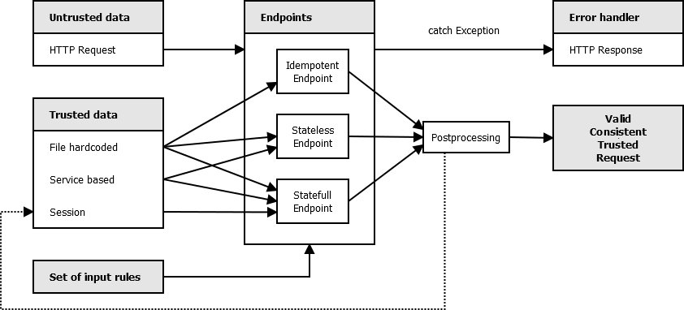

Besides of untrusted data from client's HTTP requests, endpoints should have access to trusted server's data, which can come from following resources:
Let's define three classes of endpoints:
In these trusted resources there should be Client metadata: the format in which the client's data are validated. This is not enough for secure requests, the data also needs to be consistent. The Consistency metadata are usually a set of rules/tests. Consistency metadata may be dynamic (i.e. user gaining priviledges in time). If responsibility is involved in data handling, valid and consistent data are not automatically Trusted data. In that case we need to check them outside of scope of consistency rules by using TLS (certificate check), dual security logging or by filtering network attacks on lower layer protocol. Communication security is usually not dependent on the web workflow and can be delegated to proxies which mark data as trusted.
If client's data are in valid format and consistent with data rules, the endpoints may optionally do some postprocessing to transform them to fit into small set of data models input (which will be discussed later).
This is expressed in the following diagram:

If the valid consistent request can not be obtained, it usually leads to one or a few error workflows. Therefore the endpoint should not defensively test the input in every function, but rather raise Exception which will auto-redirect it to error handling unit. The suggested exceptions are:
Only endpoints should handle client's requests. Only error handlers should handle errors. Other framework units should trust the valid consistent trusted request, they should not test it again, they should focus on the workflow. In procedural paradigm the program has phases and testing outside of testing phase is an antipattern resembling God object in OOP.
In the next step we will discuss the structure of the endpoints.